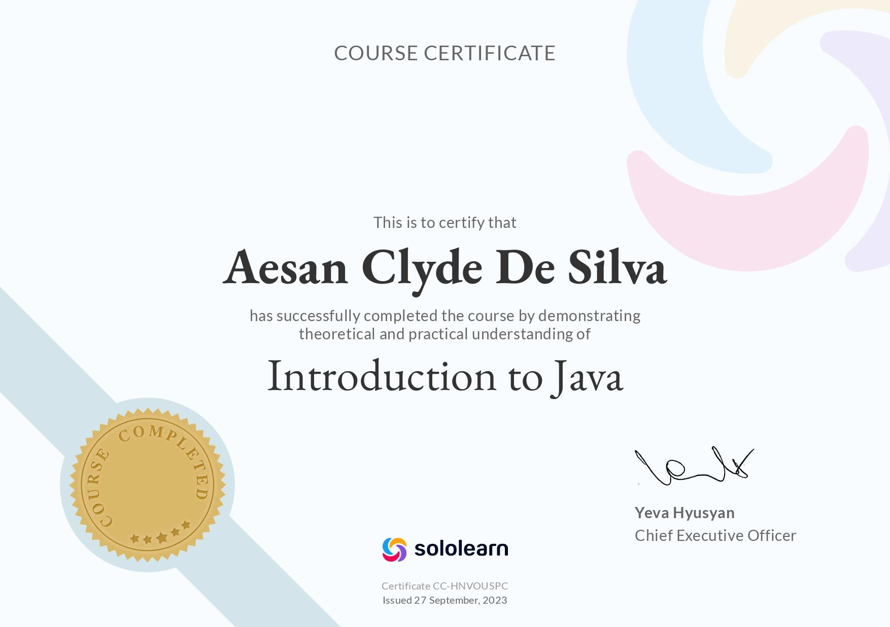
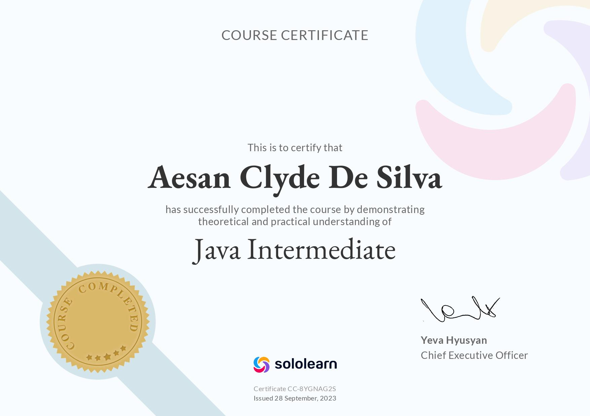

Aesan Clyde De Silva

Summary
I’m an aspiring full-stack developer passionate about building efficient, scalable, and user-friendly applications.
Currently, I’m in my final year pursuing a Bachelor of Science in Information Technology at Bulacan State University,
and I’m gaining hands-on experience as an OJT at Accenture, focusing on Java Web Development (Front-End & Back-End).
Education
Bulacan State University - City of Malolos, PH (2021-Present)
- Bachelor of Science in Information Technology
- Specializes in Web and Mobile Application Development
Work Experience
Web-Based Inventory Management System
2023 - 2025
- Led the design and development of the prototype for a user-friendly
inventory management system, emphasizing responsive design and
intuitive user experience.
- Collaborated with developers to implement front-end coding and
contribute to back-end logic, ensuring seamless component integration.
- Communicated directly with clients to gather requirements and feedback
throughout development.
Personal Website
- Developed a personal website using HTML, CSS, and JavaScript to showcase
front-end projects.
- Designed the layout and user interface with Figma for a modern, userfriendly experience.
- Implemented responsive design for optimal viewing on various devices.
Skills
Technical
- Frontend: HTML5, CSS3, JavaScript (ES6+)
- Backend: PHP
- Database: SQL Server
- Software Tools: Git, GitHub, Figma, Visual Studio, Microsoft Office
Non-Technical
- Communicates effectively, shares ideas clearly, and provides constructive feedback to the team.
- Collaborates with others, and values different perspectives to achieve shared goals.
- Focuses on problem-solving when challenges arise.
- Applies creativity in designs, generating fresh ideas that enhance usability and enjoyment.
- Asks insightful questions and actively listens to better understand others' viewpoints.
- Maintains a positive attitude, and helps to motivate and uplift the team during difficult times.
Accomplishments
Intro to Java Certification

Java Intermediate Certification

Other
© Aesan Clyde De Silva. All rights reserved.